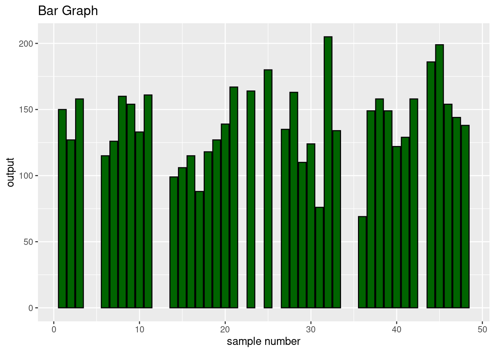

tutorial.RmdMy package is to designed to work on common endocrinological sea turtle data which often times includes:GPA coordinates of nests, reproductive output, carapace length, and the concentrations of various biomarkers.
The SeaTurtleDataProcessor R package is designed to facilitate the analysis and processing of sea turtle data. This package provides a set of functions to handle various tasks related to sea turtle research, including data cleaning, transformation, data analysis and visualization. Whether you are working with satellite tracking data, nesting site records, or other types of sea turtle data, this package aims to streamline your workflow.
## ── Attaching core tidyverse packages ──────────────────────── tidyverse 2.0.0 ──
## ✔ dplyr 1.1.4 ✔ readr 2.1.4
## ✔ forcats 1.0.0 ✔ stringr 1.5.1
## ✔ ggplot2 3.4.4 ✔ tibble 3.2.1
## ✔ lubridate 1.9.3 ✔ tidyr 1.3.0
## ✔ purrr 1.0.2
## ── Conflicts ────────────────────────────────────────── tidyverse_conflicts() ──
## ✖ dplyr::filter() masks stats::filter()
## ✖ dplyr::lag() masks stats::lag()
## ℹ Use the conflicted package (<http://conflicted.r-lib.org/>) to force all conflicts to become errorsYou can install the SeaTurtleDataProcessor package from GitHub using the devtools package. Run the following commands in your R console:
#install.packages("remotes")
library(remotes)
remotes::install_github("karidawson23/kdawson_pkg")## Downloading GitHub repo karidawson23/kdawson_pkg@HEAD##
## ── R CMD build ─────────────────────────────────────────────────────────────────
## * checking for file ‘/tmp/RtmpPvKnXU/remotes80b6e622d82/karidawson23-kdawson_pkg-a849687/DESCRIPTION’ ... OK
## * preparing ‘dawson.pkg’:
## * checking DESCRIPTION meta-information ... OK
## * checking for LF line-endings in source and make files and shell scripts
## * checking for empty or unneeded directories
## * building ‘dawson.pkg_0.1.tar.gz’
## Warning: invalid uid value replaced by that for user 'nobody'## Installing package into '/tmp/Rtmpp8JLvA/temp_libpath4c654aad10c'
## (as 'lib' is unspecified)
library(dawson.pkg)
#install.packages("googlesheets4")
library(googlesheets4)
library(googlesheets4)
library(dplyr)
#data
gs4_deauth()
drago <- read_sheet("https://docs.google.com/spreadsheets/d/11g_lm6PpiA2daKHFh-LWdNPHWmut4xmhLDmoEC4gOek/edit?usp=sharing")## ✔ Reading from drago_R.## ✔ Range drago_R.
glimpse(drago)## Rows: 49
## Columns: 15
## $ sample_number <dbl> 1, 2, 3, 4, 5, 6, 7, 8, 9, 10, 11, 12, 13, 14, 15, 16, 1…
## $ date <dttm> 2023-05-27, 2023-05-30, 2023-05-31, 2023-06-02, 2023-06…
## $ turtle_id <list> "63/64", "56/57", 2023-10-11, "23/30", "65/66", "68/69"…
## $ e2 <dbl> 6, 7, 5, 7, 6, 6, 15, 11, 13, 5, 6, 12, 10, 9, 7, 6, 13,…
## $ vtg <dbl> 128, 162, 90, 234, 58, 519, 698, 389, 875, 569, NA, 406,…
## $ test <dbl> NA, NA, 2284.10, NA, 1731.60, NA, NA, 2227.40, 1555.50, …
## $ trig <dbl> 808.0, 868.6, 957.0, 292.6, 887.7, 947.7, 1496.0, 905.8,…
## $ bhb <dbl> 452.3, 386.8, 522.4, 522.4, 470.4, 760.8, 832.9, 333.9, …
## $ total_protein <dbl> 31.49, 26.50, 25.60, 22.20, 22.50, 22.20, 23.60, 26.40, …
## $ output <dbl> 150, 127, 158, NA, NA, 115, 126, 160, 154, 133, 161, NA,…
## $ ccl <list> 81.96, 87.86, 88.7, 89.5, 81.27, 83.53, 87.6, 88.13, 92…
## $ scl <list> 83.96, 80.5, 80.8, 76.3, <NULL>, 79.9, 73, 81.4, 79.54,…
## $ latitude <dbl> 9.42860, 9.43225, 9.42797, 9.42874, 9.42877, 9.42870, 9.…
## $ longitude <dbl> -82.31816, -82.30115, -82.31212, -82.31879, -82.31893, -…
## $ time <dbl> 1, 1, 1, 1, 1, 1, 1, 1, 1, 1, 1, 1, 1, 1, 2, 2, 2, 2, 2,…The columns of my dataset include: -sample number: Allows you to
identify exactly which sample your are dealing with while also offering
some information about when the sample was collect. 1 represents the
begining of the nesting season and the farther you get from 1, the more
time has passed. -date: The date that the sample was collected
-turtle_id: Allows us to identify who the turtle is sort of like an
unique identifier. We have a few repeated turtle within out data set.
-e2: Concentration of steroid hormone, estradiol -test: Concentration of
steroid hormone testosterone -vtg: Concentration of vitellogenin
biomarker -bhb: Concentration β-hydroxybutyrate
-total_protein:Concentration of circulating total protein -output:
Reproductive output meaning the number of eggs laid when sample was
taken -ccl: Curved carapace length -scl: Straight carapace length
-latitude: Latitude coordinates of nests -longitude: Longitude
coordinates of nests
My package has 5 functions that clean data by removing NA’s, Transforming the data, creating a. ar plot, performing a stats analysis and finally mapping the nesting coordinates onto a map. This tutorial will go through how to use each one of them and why you might want to use it.
1st function: cleaning_data This function will remove all NA values from the data. This function will provide an efficient way to remove all of the NA values that may interfere with your manipulation of the data.Once you’ve downloaded and saved the dataset, you simply enter it within the function to clean it.
clean(drago)## # A tibble: 23 × 15
## sample_number date turtle_id e2 vtg test trig bhb
## <dbl> <dttm> <list> <dbl> <dbl> <dbl> <dbl> <dbl>
## 1 3 2023-05-31 00:00:00 <dttm [1]> 5 90 2284. 957 522.
## 2 8 2023-06-15 00:00:00 <dttm [1]> 11 389 2227. 906. 334.
## 3 9 2023-06-17 00:00:00 <chr [1]> 13 875 1556. 720. 108
## 4 10 2023-06-22 00:00:00 <chr [1]> 5 569 2856 984. 228.
## 5 14 2023-06-27 00:00:00 <chr [1]> 9 442 392. 469. 673.
## 6 15 2023-06-27 00:00:00 <chr [1]> 7 816 3609. 724. 273.
## 7 17 2023-06-28 00:00:00 <chr [1]> 13 112 3388. 1330. 124.
## 8 21 2023-07-05 00:00:00 <chr [1]> 9 96 1199. 718. 386.
## 9 23 2023-07-09 00:00:00 <chr [1]> 5 461 45.2 257 589.
## 10 25 2023-07-11 00:00:00 <chr [1]> 12 139 3095. 1123 677.
## # ℹ 13 more rows
## # ℹ 7 more variables: total_protein <dbl>, output <dbl>, ccl <list>,
## # scl <list>, latitude <dbl>, longitude <dbl>, time <dbl>If everything worked properly, R should return the cleaned data set.
2nd function: create_plot This function will create a bar plot of vtg and reproductive output. A big part of my own study is looking to see if there is a relationship between VTG which is a major protein precursor in egg yolk in oviparous vertebrates and reproductive output. However, depending on your own interests, you may be able to choose your own independent and dependent variable to plot. Being able to visualize data may significant help in your overall understanding of the data you collected. I think bar plots (depending on the data set) are some of the best way to visualize data especially when you are just beginning you analysis.
bar_plot(drago, sample_number, output, "sample number", "output")## Warning: Removed 11 rows containing missing values (`position_stack()`). If done correctly, there should be a bar graph of your chosen variables.
#scatter_plot(drago, test, output)The purpose of this function is to group that data and mutate it in some way. For example, with my function,
group_and_summarize(drago, c(time, output, bhb), "time", mean)## # A tibble: 3 × 3
## time output bhb
## <dbl> <dbl> <dbl>
## 1 1 138. 923.
## 2 2 134. 430.
## 3 3 145. 685.4th function: normality test This function will generate a linear model and summary from the data with hindfoot_length as the response and weight as the predictor.
normality_test(drago, "output", "bhb")## Shapiro-Wilk Normality Test for Interaction between Columns ' output ' and ' bhb ':
## Test Statistic = 0.3800933
## p-value = 1.698594e-11
##
## Interpretation:
## Interaction term is not normally distributed.##
## Shapiro-Wilk normality test
##
## data: interaction_term
## W = 0.38009, p-value = 1.699e-115th function: Map of nests
map_nests(drago, longitude, latitude)
mymap <- leaflet(drago) %>%
addTiles() %>%
addMarkers(lng = ~longitude, lat = ~latitude, popup = ~turtle_id)
mymap